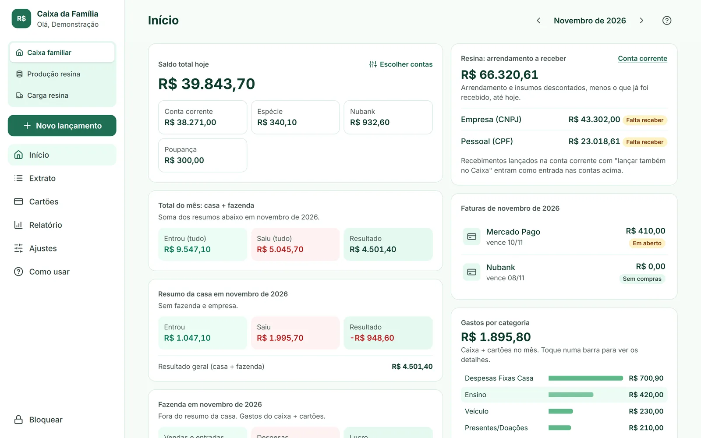
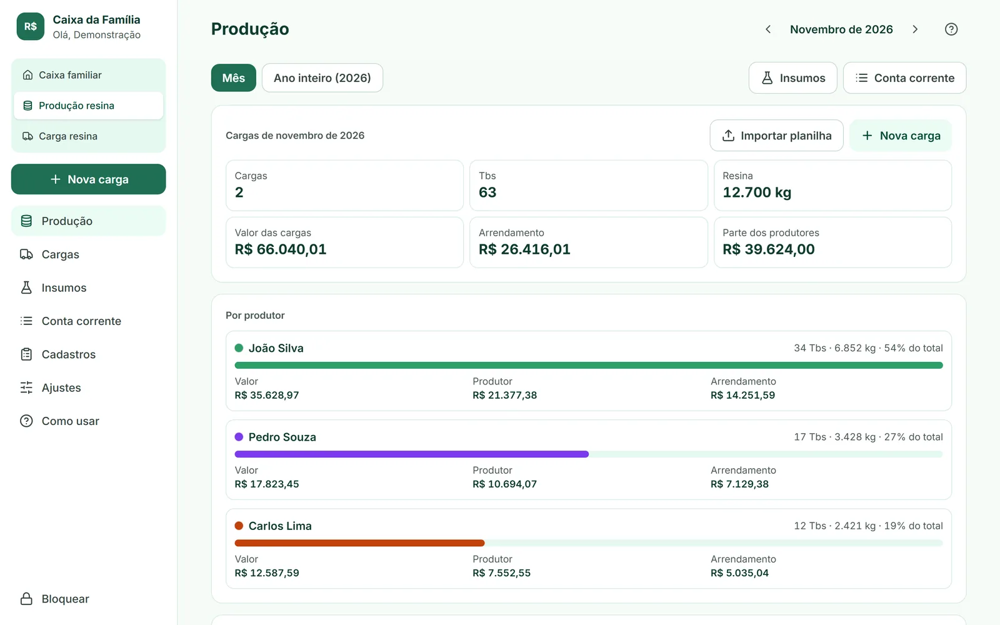
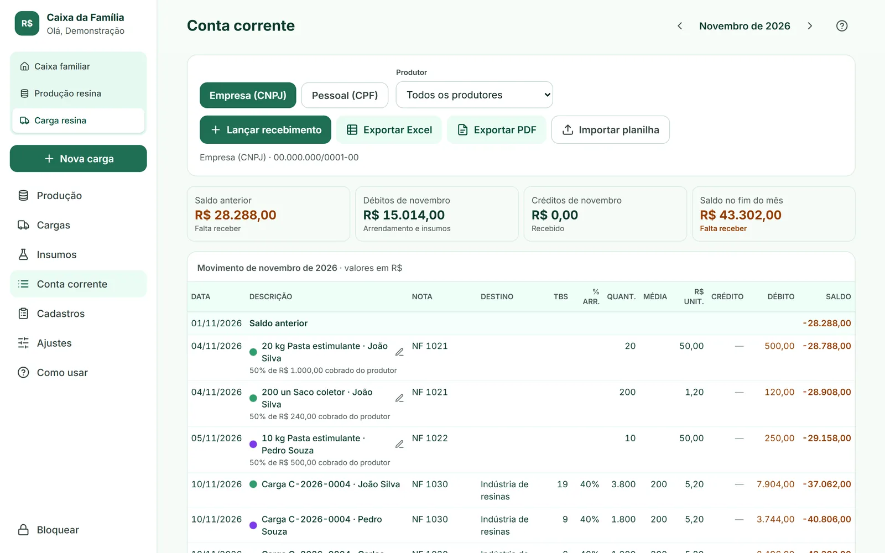
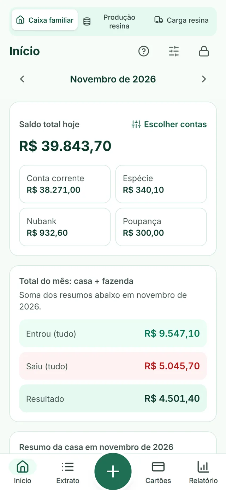
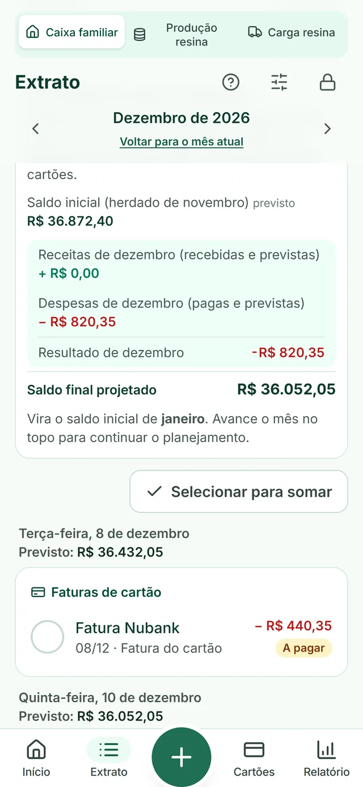
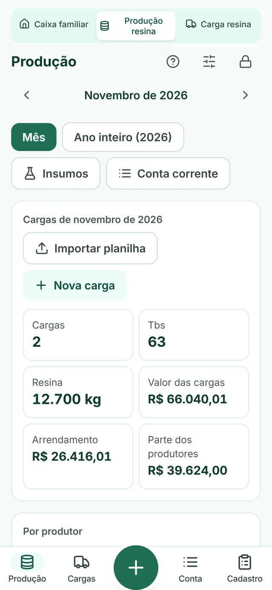
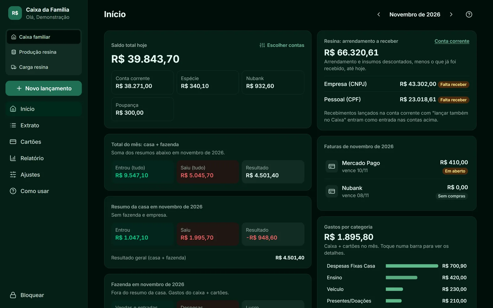

Caixa + Resina
Um sistema sob medida para uma empresa de extração de resina, que substituiu várias planilhas e hoje é usado no dia a dia.
- Cliente
- Pequena empresa do agronegócio
- Meu papel
- Análise, desenvolvimento, testes e publicação
- Plataforma
- Web (PWA), celular e computador
- Situação
- Em uso, com melhorias contínuas

O problema
A dona do negócio controlava tudo em planilhas separadas: o caixa da casa, o caixa da fazenda, as cargas de resina, a conta corrente de cada produtor e os insumos entregues. As informações não conversavam entre si. Para responder perguntas simples, como "quanto vou ter no mês que vem?" ou "quanto falta receber deste produtor?", ela precisava juntar tudo à mão.
A solução
Um sistema web único, com duas partes que se conversam:
- Caixa: contas, cartões de crédito com faturas, lançamentos que se repetem todo mês, extrato organizado por dia e por conta, e relatórios por categoria.
- Produção de resina: cargas, produtores, arrendamento, insumos e a conta corrente de cada produtor, com exportação em Excel e PDF.
- Importação das planilhas antigas, para não perder o histórico.

Destaque: projeção do caixa
Foi o pedido que mais fez diferença para a cliente. Ao avançar para um mês futuro, o sistema mostra com quanto ela começa (herdado do mês anterior), o que vai entrar e sair, e com quanto termina. Tudo se recalcula sozinho quando um lançamento muda, e o saldo nunca é contado duas vezes.
Exemplo: janeiro termina com R$ 5.000. Em fevereiro entram R$ 3.000 e saem R$ 6.500, então o mês termina com R$ 1.500, que já aparece como saldo inicial de março.


Decisões técnicas
- Sem servidor e sem mensalidade: os dados ficam no próprio aparelho (IndexedDB), protegidos por senha e criptografados com a Web Crypto API. Há backup completo e código de recuperação.
- PWA: pode ser instalado como aplicativo e funciona sem internet.
- Testes automatizados: centenas de testes das regras de cálculo (saldos, faturas, projeção) e testes de navegador com Playwright, no computador e no celular.
- Publicação contínua: cada atualização vai ao ar sozinha pelo GitHub Actions no GitHub Pages.
- Acessibilidade e tema escuro, com textos simples pensados para quem não é da área de tecnologia.
No celular




Como foi o processo
As melhorias nascem das conversas com a cliente, muitas vezes por áudio no WhatsApp. Eu transcrevo, entendo o problema, proponho a solução em palavras simples, desenvolvo, testo e publico. Usei IA (Claude Code) como parceira de desenvolvimento, o que acelerou bastante as entregas. As decisões e a responsabilidade pelo resultado ficaram comigo.
Tecnologias: JavaScript (ES Modules), Vite, Tailwind CSS, IndexedDB, Web Crypto, Service Worker, Playwright e GitHub Actions.